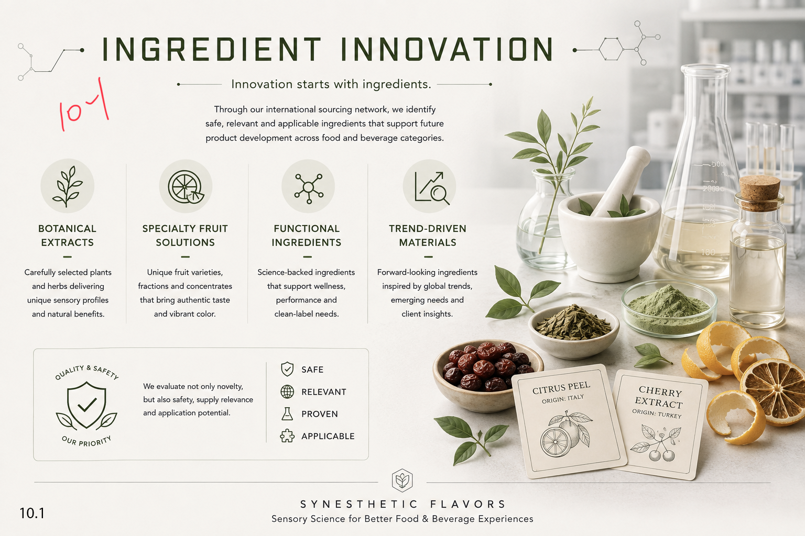
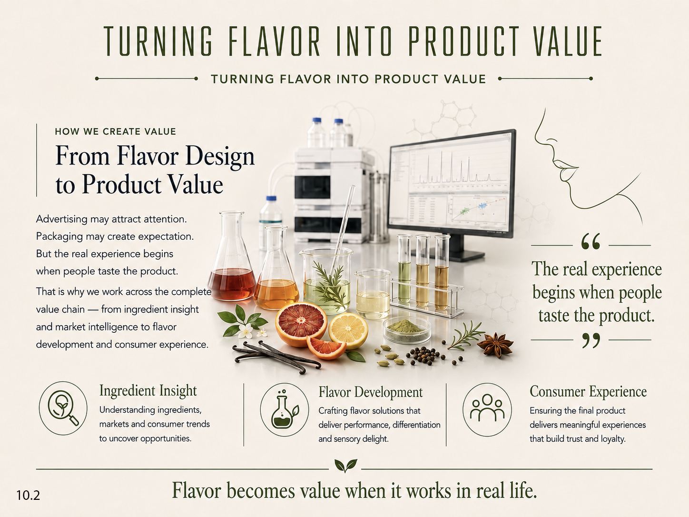
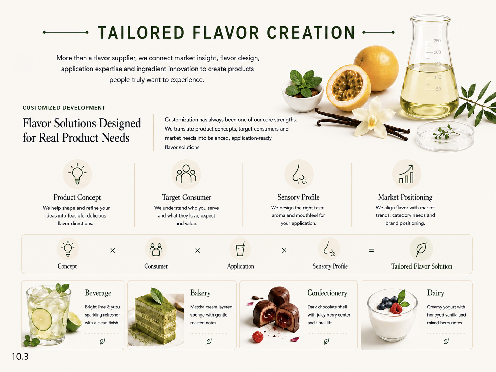
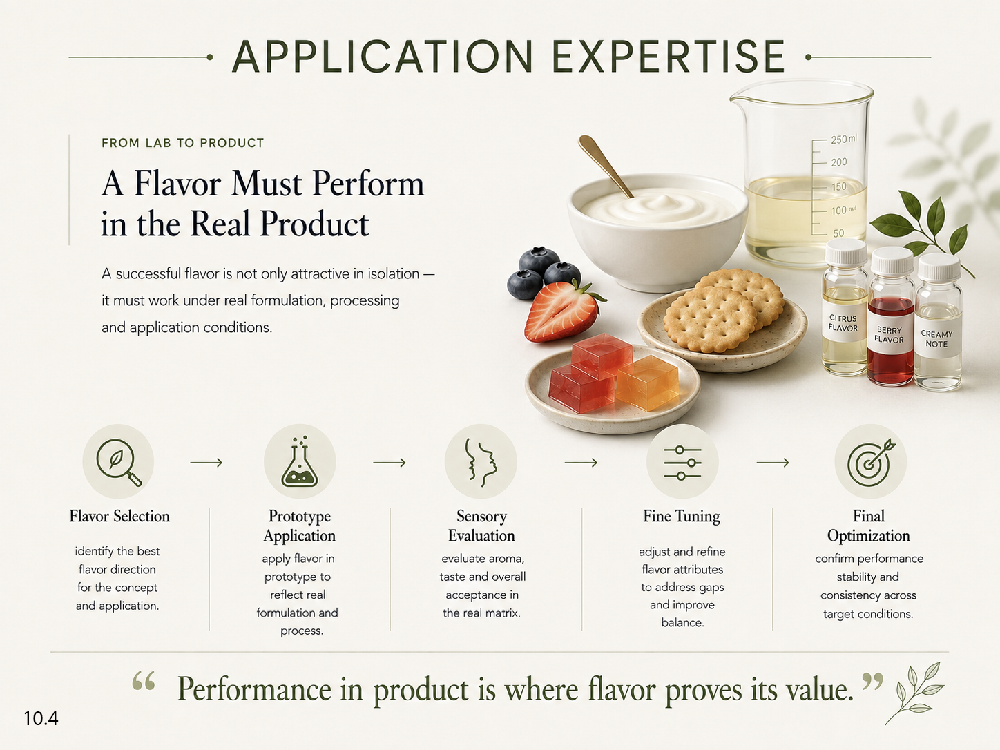

Botanical extracts
Carefully selected plants and herbs delivering unique sensory profiles and natural benefits.
Synesthetic flavor solutions
Innovation starts with ingredients.
Through our international sourcing network, we identify safe, relevant and applicable ingredients that support future product development across food and beverage categories.

Carefully selected plants and herbs delivering unique sensory profiles and natural benefits.
Unique fruit varieties, fractions and concentrates that bring authentic taste and vibrant color.
Science-backed ingredients that support wellness, performance and clean-label needs.
Forward-looking ingredients inspired by global trends, emerging needs and client insights.
How we create value

Advertising may attract attention. Packaging may create expectation. But the real experience begins when people taste the product.
That is why we work across the complete value chain, from ingredient insight and market intelligence to flavor development and consumer experience.
The real experience begins when people taste the product.
Understanding ingredients, markets and consumer trends to uncover opportunities.
Crafting flavor solutions that deliver performance, differentiation and sensory delight.
Ensuring the final product delivers meaningful experiences that build trust and loyalty.
Customized development
Flavor solutions designed for real product needs.
More than a flavor supplier, we connect market insight, flavor design, application expertise and ingredient innovation to create products people truly want to experience.
Customization has always been one of our core strengths. We translate product concepts, target consumers and market needs into balanced, application-ready flavor solutions.

We help shape and refine your ideas into feasible, delicious flavor directions.
We understand who you serve and what they love, expect and value.
We design the right taste, aroma and mouthfeel for your application.
We align flavor with market trends, category needs and brand positioning.
Bright lime & yuzu sparkling refresher with a clean finish.
Matcha cream layered sponge with gentle roasted notes.
Dark chocolate shell with juicy berry center and floral lift.
Creamy yogurt with honeyed vanilla and mixed berry notes.
From lab to product
A flavor must perform in the real product.
A successful flavor is not only attractive in isolation. It must work under real formulation, processing and application conditions.

Identify the best flavor direction for the concept and application.
Apply flavor in a prototype to reflect real formulation and process.
Evaluate aroma, taste and overall acceptance in the real matrix.
Adjust and refine flavor attributes to address gaps and improve balance.
Confirm performance, stability and consistency across target conditions.